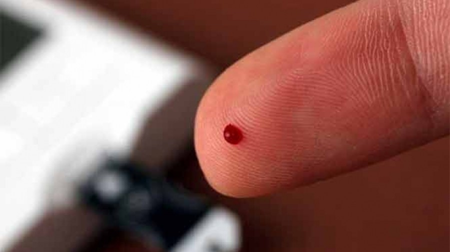

Diabetes is a common disease in which the individual’s body stops producing enough insulin or any at all, or when your body does not respond in the right way. Due to this absence the glucose (sugar) level in blood rises (hyperglycemia), having numerous consequences. Diabetes affects people of all ages. Most forms of it are chronic (lifelong), and all forms are manageable with medicine. However, nowadays there is no cure to vanish this disease entirely.
Diabetes was discovered in 1675 by Thomas Willis, nonetheless, there are uncontable evidences of people with the main symptoms. Scientist expeculate that its existence could be more than 3.500 years.
Throughout the last decades, diabetes' casualties has drastically increased worldwide. According to IDF Atlas study in 2021, 537 millions of adults (20-79 years) were diagnosed with diabetes, a 10,5% of total population in that range. Scientists are expecting an increasing to 643 millions in 2030 (11,3%) and 783 million in 2045 (12,2%)
A study by The Guardian revealed that one quarter of the total population with diabetes reside in only 4 countries:
Nevertheless, if we pay attention to data, in proportion, the most affected country by diabetes is Pakistan with 30,8%. Followed by French Polinesy (25,2%) and Kuwait (24,9%)

In this graphic it can be seen the huge difference between the cases in USA (green) and in Pakistan (purple)
This increase is thoguht to be caused by several facts. Urbanisation, high-processed aliments, obesity and more aged people. However, these reasons has affected most nations equally. Hence, what happened?
The thing is that scientists have not been able to reach a sensible conclusion. It is acknowledged that asian population are most likely to be diabetics and as time goes by, more people to have this gene. Despite, there is no certain clue of why this occurs.
Glucose is the main source of energy of the body. We obtain glucose by digesting carbohydrate-rich foods. Your body carries glucose through your blood to reach every cell. When glucose is in your bloodstream, it needs help to enter the cell, it needs a “key”. Insulin is a hormone produced in the pancreas which allow glucose enter the cell. If your pancreas is unable to produce enough insulin or your body reacts to it in a wrong way, you have diabetes.
Although these symptoms might be looked as nothing extraordinary, with time diabetes can harm blood vessels of the heart, eyes, kidneys and nerves.
For instance, diabetics can develop 4 different ocular diseases just for having diabetes. This occurs because the blood vessels become damaged, being able to leak liquids into the retina and causing blindness. This issue has a treatment but does not have a cure, this means they can cure it, but it may reappear. The best choice to avoid it is control tour diabetes and your health.
Since blood vessels reach every organ in the body, prolonged high blood glucose damages these vessels over time. As a result, organs such as the eyes, kidneys, heart and nerves may gradually lose their normal function.
The types of diabetes are separated in three sections.
Although type 1 diabetes and gestational diabetes are inevitable, the best way to avoid or delay types 2 diabetes consist in your habits am¡nd lifestyle.
The doctor can diagnose diabetes by an analysis. He checks your sugar level in blood and reaches a conclusion.
| Blood glucose (mg/dL) | Meaninig |
|---|---|
| Less than 70mg/dL | Hypoglycemia |
| 70-99mg/dL | Normal |
| 100-125mg/dL | Prediabetes |
| More than 126mg/dL | Diabetes |
Pre-diabetes is when your glucose levels are high but are not enough to be diabetes.
Although diabetes does not have a cure, you can efficiently prevent diabetes with a healthy diet, physical activity, taking care of your weight and not smoking.
If you have not eaten in a while or you are fasting, the body produces glucose in the liver by gluconeogenesis. Furthermore, the liver contains glucose in form of glucogeno. Hence, when glucose levels in blood is low, the liver will free this glucogeno becoming into glucose.
We have seen the several consequences of hiperglucemia. Nevertheless, low levels of sugar (hypoglycemia) is as harmful or more than high levels. Most common symptoms are:
That is why our body is inherited in with a sophisticated and accurate system to control the delicate balance of glucose.
OMS, MedlinePlus